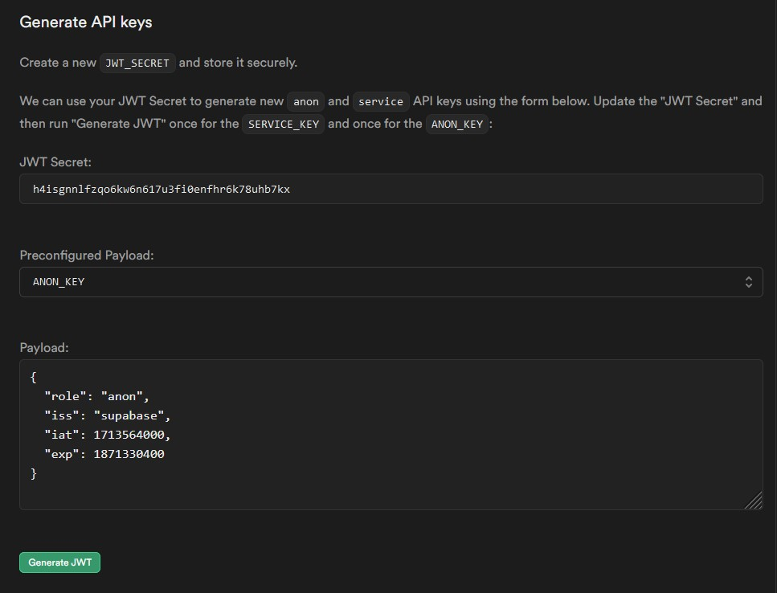
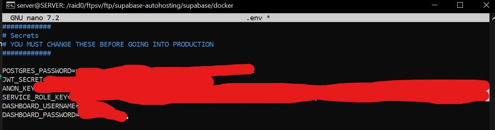

Como ya hemos indicado supabase es de codigo abierto por lo que cualquiera puede descargar el codigo y correrlo en su equipo de forma autonoma. Esto es lo que vamos a hacer y es algo muy simple.
Paso 1: Vamos a clonar el repositorio de git de supabase y vamos a traer todas
las imagenes de docker hub
#Clonar
git clone --depth 1 https://github.com/supabase/supabase
#Ir al codigo
cd supabase/docker
#Copiamos la config por defecto
cp .env.example .env
#Traemos imagenes de docker
docker compose pull
#Arrancamos los contenedores
docker compose up -d
Paso 2: Ahora nos conectaremos utilizando cualquier navegador a la direccion
del dashboard que por defecto es: http://localhost:8000 y con el
ususario-contraseña por defecto
supabasethis_password_is_insecure_and_should_be_updatedPaso 3: Ahora mismo ya tendremos acceso a nuestro propio supabase pero vamos a cambiar la contraseña para no usar la contraseña por defecto ya que es insegura. Para ello, tenemos que editar el archivo .env que anterior mente hemos usado en el paso 1 y cambiar los valores
DASHBOARD_USERNAME: DASHBOARD_PASSWORD:
Una vez cambiada la contraseña, reiniciamos todos los contenedores de supabase y hemos terminado
# Parar contenedores
docker compose down
# Encender contenedores
docker compose up -d
NOTA: tener en cuenta que antes de empezar a trabajar en nuestro proyecto tenemos que asignar
un token de seguridad para la api y demas servicios, para ello vamos a editar el archivo .env
que
hemos usado en el paso numero 3 y cambiaremos las siguientes variables:
JWT_SECRET
ANON_KEY
SERVICE_ROLE_KEY
El valor de estas variables va a ser el generado en la documentacion oficial donde explican como
autohostear nuestro propio supabase tendremos que escribir nosotros un JWT secreto y
darle a generate JWT
tanto para crear una anon key como una service key como esto es algo privado no puedo enseñarlo
pero
siguiendo los pasos es muy sencillo conseguirlo


Por ultimo reiniciamos el servidor con el comando indicado en el paso 3 y ya lo tenemos
configurado
IMPORTANTE: Normalmente siempre se recomienda leer la documentacion oficial este caso no es que se recomiende sino que es practicamente obligatorio devido a la buenisima claridad y sencillez de la documentacion de supabase, pulsa aqui y podras ver la documentacion sobre como puedes autohostear supabase
NOTA: Supabase nos ofrece la posibilidad de enviar correos a nuestros usuarios por ejemplo correos de autenticacion como magic link o de confirmacion como 2fa, pero para que esto funcione necesitamos de un servidor smtp propio o externo y tambien disponer de un dns propio o externo, en cualquier caso dejo mas informacion aqui ya que es interesante conocer esto si queremos que esta caracteristica de supabase funcione